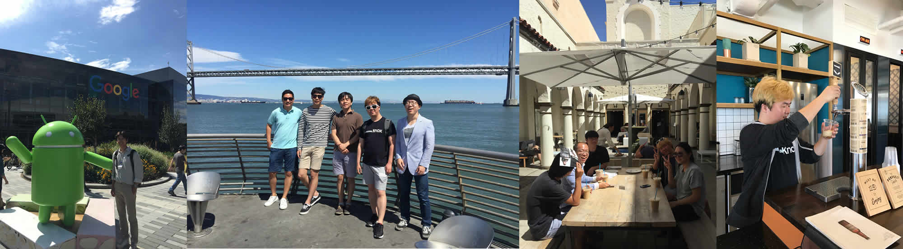

About our company
미소는 사람들의 삶을 윤택하게 하는 기술을 만들어가는 회사입니다. 미소의 핵심 서비스는 고객들이 간편하게 높은 품질의 청소를 제공하는 O2O 홈클리닝입니다. 미소는 설립 1년 남짓한 시간동안 전혀 기반이 없던 상태에서, 한 주에만 수천명의 고객들에게 서비스를 제공하는 회사로 발돋움 하였습니다. 하지만 이러한 성과는 시작에 불과하고, 우리는 미소의 다음 단계를 함께 만들어나갈 뛰어난 사람들을 찾고 있습니다.
미소의 설립멤버는 서비스와 기술에 대한 높은 이해를 바탕으로 시장에 뛰어들었습니다. 창업자 Victor Ching은 요기요의 초기멤버이자 CPO로서 한국의 배달 음식 시장을 혁신한 경험을 가지고 있습니다. 또다른 창업자 이학수는 KAIST, 삼성전자, 안철수 연구소에서의 경험을 가지고 홈클리닝 시장의 기술혁신을 이루어내려고 하고 있습니다. 다른 팀원들 역시 쿠팡, 요기요 등 기술과 서비스의 접점을 경험했으며, 이러한 경험들을 모아 홈클리닝 시장을 개척하려 합니다.
미소는 한국 뿐 아니라, 실리콘 밸리, 로스앤젤레스 등 다양한 투자사들이 그 가능성을 인정해왔습니다. 세계 최고의 초기투자사 Y Combinator를 비롯해 Primer, Sazze Partners, Strong Ventures, FundersClub 등이 이미 미소의 가능성을 확인하고 초기 투자를 완료했습니다. 뿐만 아니라 Y Combinator의 파트너인 Geoff Ralston이나 Storm8의 CEO인 Perry Tam, Mino Games의 CEO인 조시 버클리 등의 개인 투자자들도 미소의 가능성을 보고 투자를 진행했습니다.
